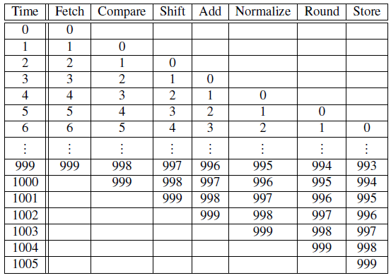

多核平台下的并行计算复习题
1.矩阵向量乘法，行数或者列数不能被线程数整除的情况下，如何分配数据
串行代码：
答案:
Pthreads可整除代码
Pthreads不可整除的计算 ： 小于余数的rank多算一份，然后考虑用什么公式去划定一个范围my_first和my_last
1 | q=n/p //n是行数or列数，p是线程数 |
-
假设每个进程调用MPI_Reduce运算符 MPI_SUM，目标进程 0。乍一看，似乎在两次调用 MPI_Reduce 之后，b 的值将是 3，d 的值将是 6。 但是，内存位置的名称与对MPI_Reduce调用的匹配无关。调用的顺序将决定匹配，因此存储在 b 中的值将为 1+2+1 = 4，存储在 d 中的值将为 2+1+2 = 5。 若Process 1为目标进程，则执行结束后，d = 1 + 2 + 1 = 4; b = 2 + 1 + 2 = 5。
3.
加入缓存和虚拟内存不会改变SISD类型，缓存和虚拟内存只是在硬件上缓解了冯·诺依曼瓶颈，没有对指令流和数据流做出改变；
加入流水线，提供单指令流，多数据流的服务，类型变为SIMD
加入多发射或硬件多线程，多发射可以看作把一个线程（指令流）在多个ALU上同时启动了一部分，分裂为多个指令流，构成MIMD
硬件多线程是在当前任务被阻塞时，系统试图切换到别的线程继续有用的工作，默认了多线程的存在，构成MIMD
Pipelining - functional units are arranged in stages.流水线 - 功能单元分阶段布置。
Multiple issue - multiple instructions can be simultaneously initiated.多发射 - 可以同时启动多个指令。
- 内存位置的集合，访问时间比其他一些内存位置更短。CPU 缓存通常位于同一芯片上或者访问速度比普通内存快得多的芯片上。
Cache循环效率，按行访问按列访问哪个快？
由于C语言是行主序存储，故按行访问更快。
第一个双重for循环的内层循环是按行访问，cache命中率高，速度更快；
第二个双重for循环的内层循环是按列访问，cache命中率低，速度更慢。
5.

（取操作数，比较指数，转换其中一个操作数，相加，标准化结果，舍入，存结果）
将浮点加法器分成 7 个独立的硬件或功能单元。第一个单元获取两个操作数，第二个单元比较指数，依此类推。一个功能单元的输出将输入到下一个功能单元。

不采用流水线，1000次操作需要7000纳秒，流水线只需要999(前999次操作走完第一步流程，第1000次操作进入流水线)+7=1006纳秒
a.9
b.9000
c.999*2+9=2007最后一个可以不按流水线
6.Partitioning options分区
块分区 将连续组件块分配给每个过程。
循环分区 以循环方式分配组件。
块循环分区 使用组件块的循环分布。

7.点对点通信与集合通信
通信子中的所有进程都必须调用相同的集合函数。
每个进程传递给 MPI 集合通信函数的参数必须是“兼容的”。
output_data_p参数仅用于dest_process。但是，所有进程仍然需要传入与output_data_p相对应的实际参数，即使它只是 NULL。
点对点通信在标签和通信子的基础上进行匹配。集体通信不使用标记。它们仅根据通信子和调用顺序进行匹配。
8.
1 |
|
结果是_OPENMP：201511
_OPENMP的输出值具有yyyymm的形式。OPENMP标准声明，只要该宏被定义，代表的是OPENMP标准的发布时间。
9.
1 |
|
10.Cache coherence缓存一致性
侦听缓存一致性：
内核共享一条总线。
总线上传输的任何信号都可以被连接到总线的所有内核“看到”。
当核心 0 更新存储在其缓存中的 x 副本时，它还会在总线上广播此信息。
如果核心 1 正在“窥探”总线，它将看到 x 已更新，并且可以将其 x 副本标记为无效。
基于目录的缓存一致性：
使用称为目录的数据结构，用于存储每个缓存行的状态。
更新变量时，将查询该目录，并且缓存中具有该变量缓存行的核心的缓存控制器将失效。
区别或联系：
由于广播的代价较大，基于目录的cache一致性协议比监听cache一致性协议更容易拓展，它不依赖总线。
基于目录的cache一致性协议更复杂，因为要维护额外的目录结构。
CUDA:
11.必考。 下段代码存在什么潜在的问题？如何解决？
1、取余操作（%）慢：由于CUDA没有硬件支持的取余运算，所以会把取余运算编译成20条左右的指令，会导致GPU性能很低。
2、这段代码是highly divergent的，因为CUDA的GPU采用了SIMT(Single-Instruction, Multiple-Thread，单指令多线程)架构，所以无法让同一warp(线程束)的线程执行不同指令；并且GPU无法进行分支预测，所以就导致了在该warp中，if判断语句计算tid是否为偶数，会导致有一半的线程（即奇数号线程）空闲，导致分支严重，性能下降严重。
解决：
1、用乘法计算index，去掉取余操作。
2、if分支写成 index < blockDim.x，连续条件判断，使得同一个warp中的线程统一执行或统一不执行该语句，大幅提升性能。让线程直接去访问偶数号的位置
12.代码纠错
1 | for (i = 0; i < N; i++) |
并行
1 | __global__ void gpu_matrixmult(int *a, int *b, int *c, int N) { |
13.代码纠错
offset=row∗N+column
1 |
|
14.CUDA计算一维向量和计算题。纠错。
注意i的计算！！！